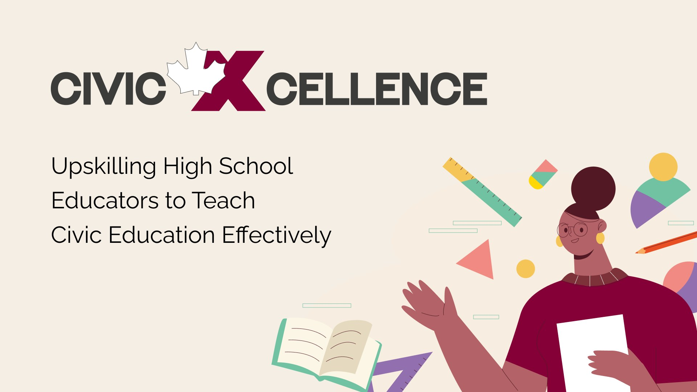
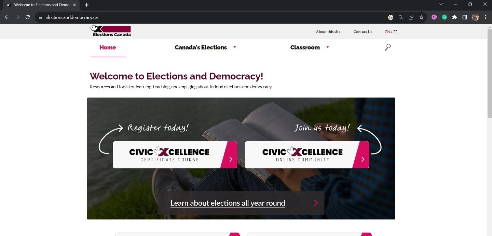
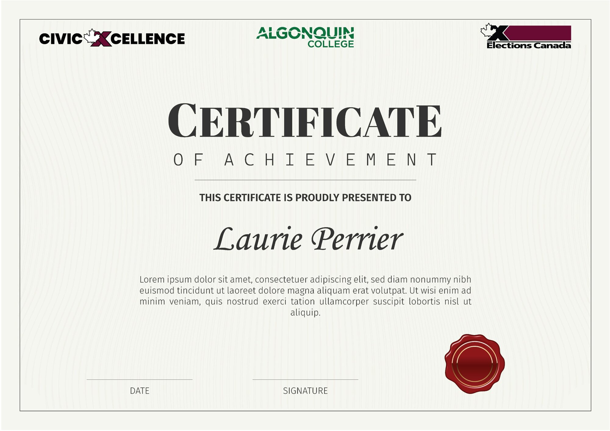
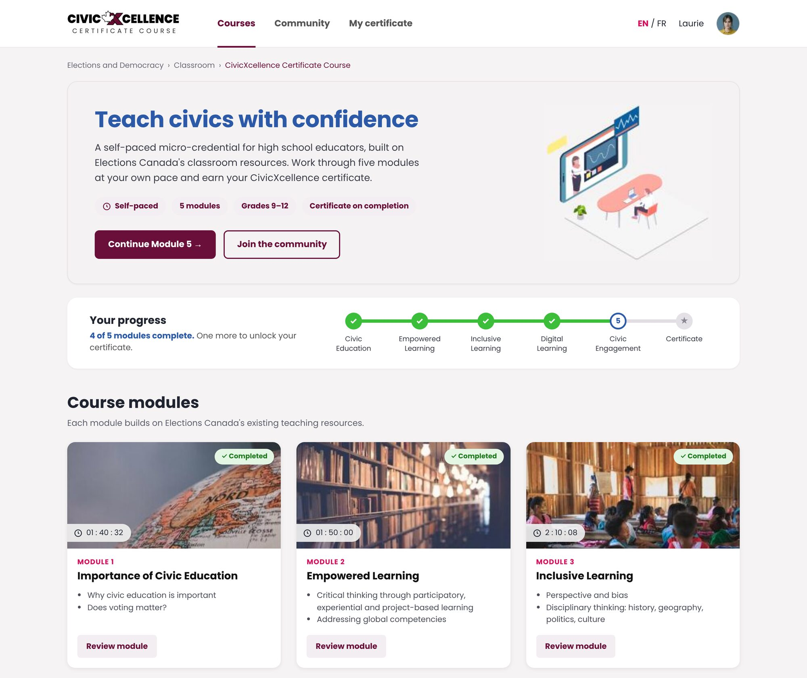
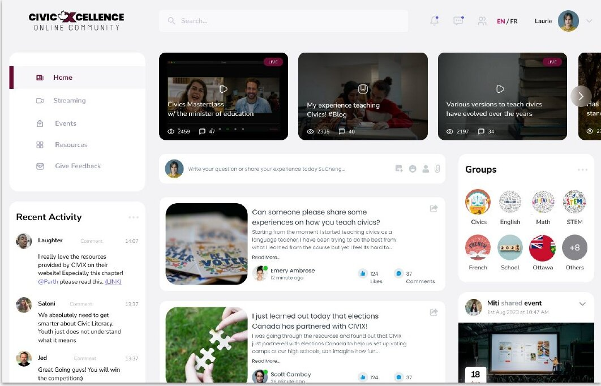
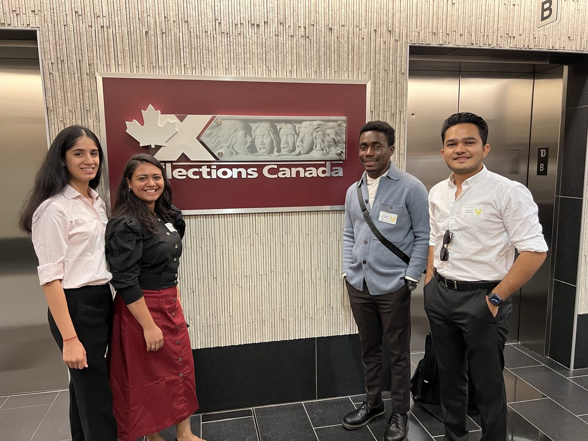
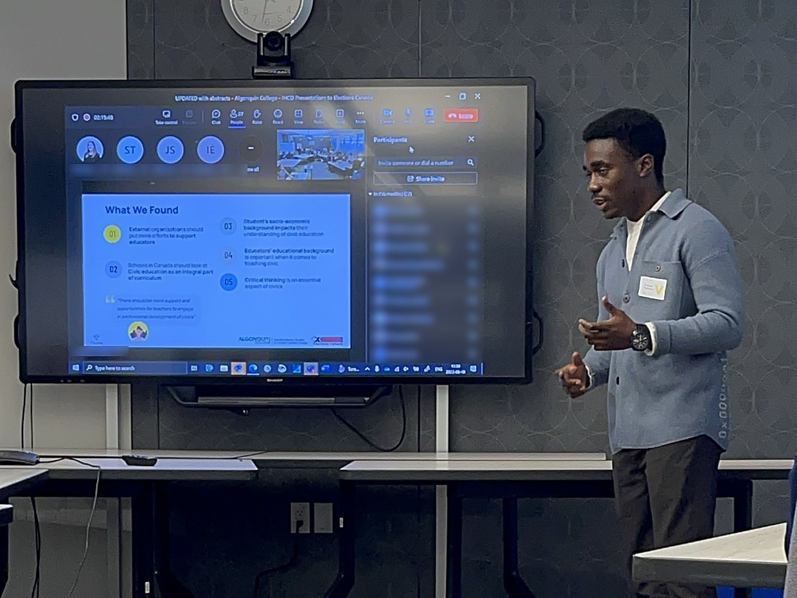
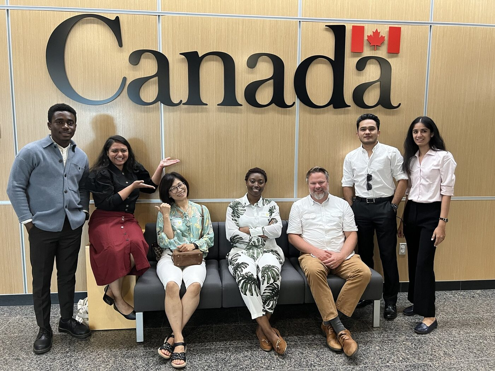

CivicXcellence
An applied research project with Elections Canada that became a five-stage program to help high school teachers teach civics with confidence.
- Discipline
- UX research and service design
- My role
- UX researcher and graphic designer
- Partner
- Algonquin College HCD Lab with Elections Canada
- Methods
- Iceberg Model, survey, interviews, thematic analysis, usability testing
- Tools
- Figma, FigJam, Miro

Overview
Many Canadians are unsure what civic responsibility asks of them, and civic literacy is uneven across the country. Working with Algonquin College and Elections Canada, our team set out to understand why, and to propose practical ways to change it.
What are Canadians’ perceptions of civic responsibility, and what is their level of civic literacy?
The research question from Elections Canada
The team
A team of four from Algonquin College’s Human-Centred Design program, working with Elections Canada.
My role
- Interviews. I conducted interviews with teachers and subject matter experts, gathering the insights behind our five themes.
- Recruitment. I designed the recruitment poster and went to schools in person to recruit teachers, which helped when educators were hard to reach.
- Usability testing. With the team, I ran usability tests where teachers looked for civics teaching resources on Elections Canada’s website, which showed us where they got lost.
- Solution design. I designed the CivicXcellence solution, shaping the research into the five-stage program.
- Presentation. I presented our research findings to Elections Canada at its headquarters in Ottawa.
- Animation. I created animations to present the project and bring the program to life.
Narrowing the focus
The question was broad, so we started wide. Using the Iceberg Model, brainstorming sessions and a review of articles and reports, we looked beneath the surface for what was driving the problem. Four findings stood out:
Civic education in Canada is surprisingly limited.
Students’ socioeconomic status affects their civic literacy and involvement.
STEM students show less interest in civic involvement than their peers.
Teachers’ own educational background shapes how they teach civics.
The last finding pointed to the people best placed to change the answer. With Elections Canada’s support, we focused on high school educators teaching grades 9 to 12. They meet students at a formative stage, building critical thinking and civic awareness that carry far beyond the classroom.
How we researched
We combined quantitative and qualitative methods. The survey drew only 16 responses, too few to stand on their own, so we went deeper instead of wider: interviews with civic and non-civic educators and with subject matter experts.
We analyzed the survey with descriptive statistics. Interviews were transcribed, anonymized and coded through thematic analysis.
Challenges, and how we adapted
Teachers were on break
Our research window fell during school holidays, so many educators weren’t available for interviews or surveys.
A second approval we didn’t know about
We had approval from Algonquin College’s Research Ethics Board, but learned partway through that the school board’s approval was also needed. That delayed our access to high school teachers.
Snowball sampling
We asked each educator we spoke with to introduce us to colleagues, which steadily widened our pool of participants.
Subject matter experts
Interviews with experts added depth to our data and helped us reach more educators.
What educators told us
Five themes came through across our interviews with experts and educators:
Critical thinking
Civics sticks when lessons connect to real-world events and encourage students to think for themselves.
Socioeconomic barriers
Students with work or family responsibilities have fewer chances to engage than their more privileged peers.
Educator expertise
Civics is often taught by teachers without a background in the subject. They need professional development, and schools need to hire for it.
Outside partnerships
Educators saw real value in organizations like CIVIX Canada for resources, training and support.
Hard-to-use resources
Few educators knew Elections Canada’s civic curriculum, and our usability testing confirmed its interface and navigation got in the way.
“There should be more support and opportunities for teachers to engage in professional development of civics.”
An educator we interviewed
Testing Elections Canada’s website
Elections Canada already publishes civics resources for teachers, so we wanted to know why so few educators used them. We asked teachers to do one simple task: find resources on the Elections Canada website that would help them teach civic education.
They struggled. Navigation was the biggest problem. Teachers couldn’t tell where the classroom materials lived, and when they did find them, the materials felt long and cumbersome to work through.
That led to our key realization. If teachers who already teach civics found the site hard to use, it would be even harder for the many who don’t. In our survey, more than half of the educators (9 of 16) were not civics teachers, yet they are often the ones assigned to teach it. They don’t just need better menus. They need someone to walk them through the material.
Fixing the navigation wasn’t enough. Non-civics teachers needed a guided path, not just a better menu.
That insight shaped the whole solution. Instead of only redesigning the website, we designed a cycle that takes teachers from a first workshop, through self-paced learning and certification, into an online community, with clear entry points on the Elections Canada site so the resources are easy to find.
From insight to ideas
We turned the themes into five experience principles to guide every idea:
Alongside them, we wrote “How might we” questions for each challenge. Ideation produced five solution directions:
- Raise awareness of outside organizations like CIVIX Canada
- Improve the usability of the Elections Canada website
- Build inclusive, practical strategies for teaching civics
- Offer professional development for educators
- Strengthen how civics teachers are selected
We tested these directions with subject matter experts and educators. They were well received, and participants were excited about what they could do for students. The strongest ideas came together in one program.
The solution: CivicXcellence
CivicXcellence is a five-stage journey that upskills high school educators to teach civics with confidence. It builds on Elections Canada’s existing resources and closes gaps in curriculum, access and professional development.
- 1
In-person workshop
A 2.5-hour session with school boards that introduces Elections Canada’s resources, connects educators and features expert talks.
- 2
Self-paced online learning
A flexible micro-credential covering digital literacy, inclusive teaching and civic engagement, with interactive modules.
- 3
Certification
A joint certificate from Elections Canada and an accredited institution that recognizes educators’ new skills.
- 4
Classroom impact
Educators bring what they’ve learned to students, teaching civic rights, responsibilities and participation.
- 5
Collaboration platform
An online space to share resources, connect with peers and organizations, and keep improving.
Visualizing the service
The service itself was the solution. To help Elections Canada picture it, we created concept visuals of how it could live as an extension of their existing website: clear entry points on the homepage, a course page that leads to the certificate, and an online community for collaboration. These are concepts, not a finished website.




Next steps
Our project focused on designing the service. As further study, we recommended properly designing the CivicXcellence website, building on these concepts, and testing it with teachers, especially non-civics teachers, to make sure the course and community are easy to find and use.
Presenting to Elections Canada
We presented our research and the CivicXcellence program to Elections Canada at its headquarters in Ottawa, with staff joining in person and online. They responded well to the program, agreed with our insights and asked to keep our research.



Impact
Elections Canada liked the program, agreed with our insights, and asked to keep our research.
CivicXcellence connects educators, Elections Canada and outside organizations in one continuous journey, from a first workshop to an ongoing community. It gives teachers the tools to deliver inclusive, engaging civics lessons, and helps students grow into informed, active citizens.
For me, the project showed how design thinking can take on a problem as broad as civic literacy: by finding the people best placed to change it, and designing around what they need.